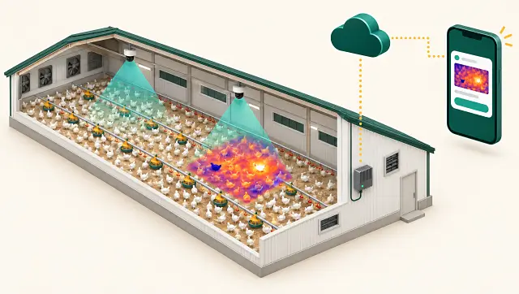
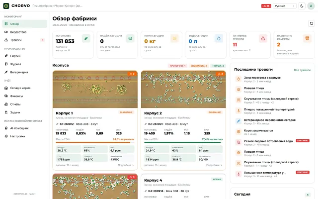
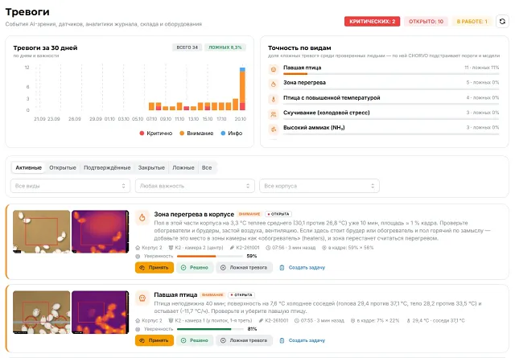
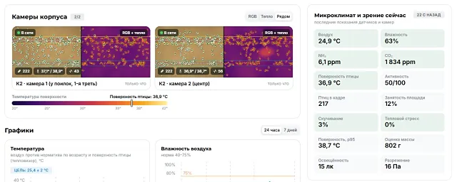
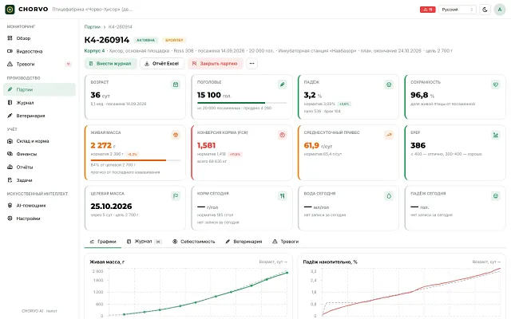
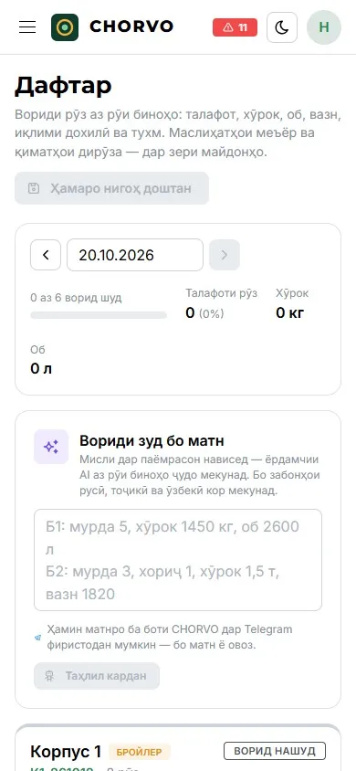
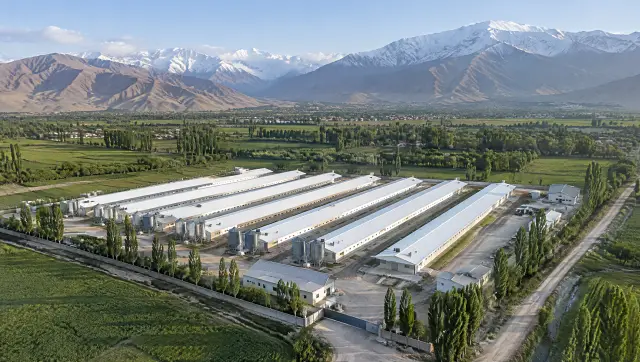
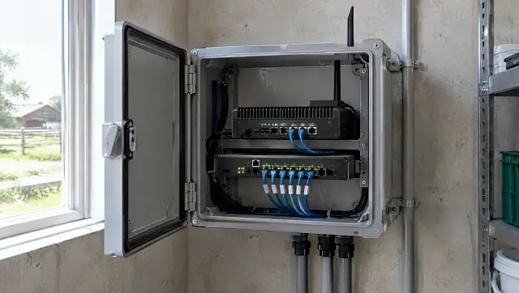
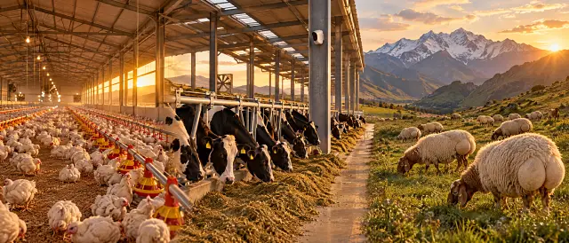

CRM · за фабрику
CRM Start
Фабрика до 3 корпусов
$39в месяц · ≈360 сомони
- Партии, журнал, корма, расходы, продажи
- Telegram-бот, ввод голосом и текстом
- AI-помощник учёта на RU, TJ, UZ
Без оборудования

AI для птицефабрик Центральной Азии
Камеры и тепловизоры находят павшую птицу за 1–2 часа, а не через 8–12 часов на обходе, и замечают тепловые аномалии раньше человека. CRM считает каждый килограмм корма и каждую голову.
Потери, которых не видно на обходе
Корм — около 62% себестоимости бройлера, а павшая птица, найденная утром, уже успела стать проблемой для соседей. Считаем на один корпус в год.
$3,7–4,9 тыс.
лишний 1 п.п. падежа
≈34–45 тыс. сомони на корпус в год
$14,8 тыс.
FCR хуже на 0,1
≈137 тыс. сомони на корпус в год
$0,3–0,7 млн
одна вспышка гриппа птиц
простой и уничтоженное поголовье на фабрике с оборотом 1 млн голов в год
2–3 обхода
в сутки при ручном контроле
между ними павшая птица лежит до 8–12 часов
Птица погибла в 22:10 → найдена на утреннем обходе в 08:00, через ≈10 часов
Камеры смотрят непрерывно → тревога в Telegram в 23:00, после 40–60 минут неподвижности
Модель CHORVO: корпус на 20 тыс. бройлеров, 6,5 оборота в год, живой вес 2,4 кг, FCR 1,75. Цены корма и живой птицы — оценки, их уточняем на пилоте.
Тепловизор + RGB-камера
Павшая птица остывает и становится холодным пятном среди тёплых соседей. Птица с повышенной температурой светится ярче. Потяните границу и сравните обычную камеру с тепловизором.
Тепловизор класса «T»: матрица 256×192, точность ±2 °C. Каждую зону система сравнивает с её собственной нормой.

 27 °C · павшая
40 °C · осмотр
27 °C · павшая
40 °C · осмотр
Как это работает
Анализ идёт на месте и не зависит от связи. В облако уходят события, журнал и отчёты.

RGB-камеры 4 Мп с ИК-подсветкой и бизонная камера-термограф смотрят на пол круглосуточно.
Edge-компьютер анализирует видео на месте. Без связи он продолжает работать и копит события в очереди.
События попадают в журнал партии. Система сверяет «камера ↔ журнал» и считает KPI против норматива.
Тревога в Telegram со снимком и местом в корпусе. Кнопки «Принял» и «Ложная» обучают систему.
Что вы получаете
Камеры находят события, CRM превращает их в цифры партии, бот приносит всё в Telegram.
Честно отмечаем, что готово к пилоту, а что пока в бете.

Всё, что сейчас ведут в тетради и Excel, с расчётами по нормативу кросса.
Журнал одной строкой, голосом или текстом, на русском, таджикском или узбекском.
К3 пало 12, корм 2,4 т, вода 5600 л
Черновик записи журнала
Корпус 3 · 20.10: падёж 12 гол., корм 2 400 кг, вода 5 600 л
Сохранить в журнал?
Сохранено в журнал. Падёж за сутки — 0,06% поголовья, в пределах норматива.
AI-помощник собирает главное по фабрике: в панели и по команде /today в боте.
Это уже работает
Система работает на демо-фабрике с виртуальным корпусом. Следующий шаг — калибровка на ваших корпусах.






Почему CHORVO
Готового продукта с такой связкой на рынке мы не нашли: обычно это отдельные камеры, датчики и учёт.
Анализ идёт в корпусе, события ждут связи в очереди. ИБП держит камеры 20–40 минут без света.
Оператор пишет журнал по-таджикски или по-узбекски, директор читает отчёт по-русски.
Камеры смотрят на пол, а не на людей. Обезличенные кадры идут только на дообучение моделей.
Калькулятор окупаемости
Двигайте ползунки: экономия от снижения падежа и лучшего FCR против стоимости Vision Pro.
Экономия в год
$24 700
≈229 тыс. сомони
Оценка по модели, проверяется на пилоте.
Проверить расчёт на пилотеДопущения модели. Живой вес 2,4 кг, FCR 1,75, корм $0,50/кг, живая птица $1,70/кг — оценки для Таджикистана на 2026 год, курс 9,26 сомони/$. Птица в среднем гибнет на 25–38-й день: теряем её выручку за вычетом корма, который она не успела съесть, ≈$3,30 за голову. Раннее выявление болезней и учёт потерь корма в расчёт не входят.
Тарифы
Камеры, тепловизоры и edge-компьютер остаются нашими и входят в подписку. Цены в долларах, договор — в местной валюте.
CRM · за фабрику
Фабрика до 3 корпусов
$39в месяц · ≈360 сомони
Без оборудования
CRM · за фабрику
Фабрика до 15 корпусов
$99в месяц · ≈915 сомони
Без оборудования
Vision · за корпус
RGB-камеры без тепловизора
$119в месяц · ≈1 100 сомони
Установка $300 на корпус, разово
Vision · за корпус
Камеры + 2 тепловизора
$189в месяц · ≈1 750 сомони · ≈1,7 цента на бройлера
Установка $500 на корпус, разово
Клиенты-основатели. Первые 10 фабрик получают −30% на подписку на 12 месяцев в обмен на публичный кейс.
Дешевле робота. Год Vision Pro на корпус стоит $2 268. Робот-обходчик для корпуса — около €15 тыс. (оценка рынка).
Без риска для птицы. Пауза подписки до 60 дней при вспышке болезни. При просрочке тревоги в корпусе продолжают работать.
Холдингам — CRM Enterprise от $299 в месяц: несколько площадок, API, выгрузка в 1С.
Пилот 100 дней
Ставим Vision Pro на 1–2 корпуса и CRM Pro на всю фабрику. Соседний корпус без системы остаётся контрольным.
KPI в договоре
Этапы пилота
Кому подходит: бройлерная или яичная фабрика на 50–500 тыс. голов, два и больше корпусов одного типа, журнал (хоть бумажный) за последние три партии.

Оборудование
Промышленные камеры с защитой IP67, питание по сетевому кабелю, шкаф с ИБП и LTE-роутером.
стоит пилотный комплект на корпус. Для вас он в аренде внутри подписки, покупать его не нужно.
Пилотный комплект видит камерами 35–40% пола, тепловизором — около 12%. Покрытие мы измеряем и показываем в отчёте; чтобы полностью заменить обходы, ставим больше камер.

Вопросы
Не нашли ответа? Напишите в заявке — ответим и покажем систему вживую.
Да. Видео анализирует edge-компьютер прямо в корпусе. Без связи система продолжает находить события и копит их в очереди, а тревоги и журнал уходят в облако и Telegram, когда связь возвращается. Для связи ставим LTE-роутер, а ИБП держит камеры 20–40 минут без света.
Фабрике. Камеры направлены на пол, персональные данные сотрудников мы не собираем. Обезличенные кадры используем только для дообучения моделей. Для Казахстана данные хранятся на местном сервере.
Нет: камеры, тепловизоры и edge-компьютер входят в подписку как аренда. Обычная камера наблюдения не заменит тепловизор класса «T», но ваши RGB-камеры можно подключить, если ракурс и разрешение подходят. Это проверяем на обследовании.
Цели пилота записаны в договор: полнота ≥90% по павшей птице в зоне покрытия камер и точность тревог ≥85%. Первые 1–2 недели система работает в «тихом режиме»: оператор отмечает «верно» или «ложно», а мы подбираем пороги. Мы не обещаем «99%» и не ставим диагнозы.
Нажмите «Ложная» в Telegram. Каждая отметка становится разметкой для дообучения. Пороги настраиваются, есть лимит тревог в час. Цель — не больше 2–3 ложных тревог на корпус в сутки.
На русском, таджикском и узбекском: панель, Telegram-бот и ввод журнала голосом или текстом. Каждый сотрудник выбирает свой язык.
Один день на корпус, в санитарный разрыв между партиями. Обследование площадки и договор — за две недели до монтажа.
Монтажники работают по протоколу фабрики: душ, спецодежда, не меньше 72 часов без контакта с другой птицей, дезинфекция инструмента. После запуска заходить в корпус приходится реже: осмотр идёт по камере, а люди идут к конкретной тревоге.
Если у контроллера есть Modbus или API (Rotem, Fancom, Big Dutchman и другие), подключаем его показания — это проверяем на обследовании. Если нет, ставим свои датчики. Управление климатом остаётся за вашим контроллером.
Да. CRM Start за $39 или CRM Pro за $99 в месяц на всю фабрику: партии, журнал, корма, ветплан, финансы и Telegram-бот. Камеры можно добавить позже.
Заявка на пилот
Оставьте контакты: договоримся об обследовании площадки и посчитаем экономию на ваших цифрах.
Или напишите напрямую:
Пилот 100 днейс возвратом денег по KPI
Заявка